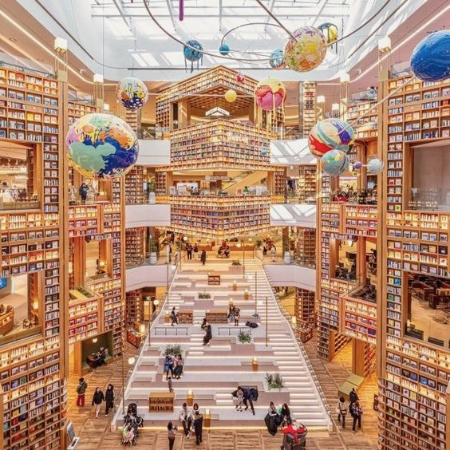
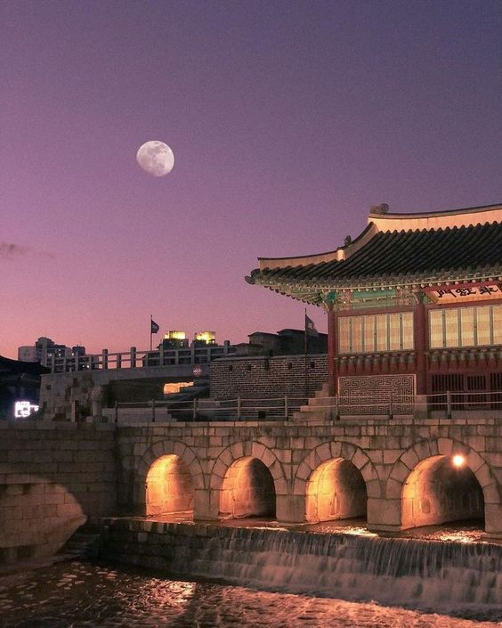

My hometown, SUWON
Suwon is the 8th most populous city in South Korea. Home to the headquarters of Samsung Electronics, Suwon serves as a key economic center. The city also boasts a wealth of cultural facilities, such as Byeolmadang Library and the Suwon World Cup Stadium, making it a convenient and developed place to live. Alongside these modern amenities, Suwon also houses several beautiful historic sites designated as World Heritage Sites. The contrast between its contemporary urban environment and these historic locations offers a refreshing blend of new and old, making it a uniquely attractive city.

